Test_06_cli_y1587_v7 — Sea Ice & Land Ice
49 variable(s): 21 FAIL, 16 WARN, 12 PASS, 0 other.
FAIL
Sea-Ice Area North
CF: sea_ice_area
Total integrated area of sea ice in the Northern Hemisphere (where siconc > 0). Does not include grid cells partially covered by land.
| Quantity | Expected | Observed |
|---|---|---|
| min | 4 (Sep) | 5.434e+12 |
| mean | 11 | 1.074e+13 |
| max | 16 (Mar) | 1.506e+13 |
Affected files (4)
- siarea_tavg-u-hm-u_day_nh_gn_AWI-ESM-3_picontrol_r1i1p1f1_15870101-15871231.nc
- siarea_tavg-u-hm-u_day_sh_gn_AWI-ESM-3_picontrol_r1i1p1f1_15870101-15871231.nc
- siarea_tavg-u-hm-u_mon_nh_gn_AWI-ESM-3_picontrol_r1i1p1f1_158701-158712.nc
- siarea_tavg-u-hm-u_mon_sh_gn_AWI-ESM-3_picontrol_r1i1p1f1_158701-158712.nc
Sea-Ice Extent North
CF: sea_ice_extent
Total integrated area of all Northern Hemisphere grid cells that are covered by at least 15% areal fraction of sea ice (siconc >= 15). Does not include grid cells partially covered by land.
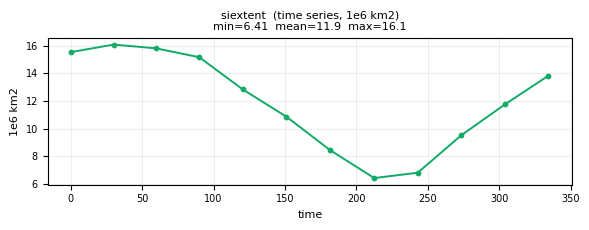
| Quantity | Expected | Observed |
|---|---|---|
| min | 6 (Sep) | 6.299e+12 |
| mean | 12 | 1.196e+13 |
| max | 16 (Mar) | 1.636e+13 |
Affected files (4)
- siextent_tavg-u-hm-u_day_nh_gn_AWI-ESM-3_picontrol_r1i1p1f1_15870101-15871231.nc
- siextent_tavg-u-hm-u_day_sh_gn_AWI-ESM-3_picontrol_r1i1p1f1_15870101-15871231.nc
- siextent_tavg-u-hm-u_mon_nh_gn_AWI-ESM-3_picontrol_r1i1p1f1_158701-158712.nc
- siextent_tavg-u-hm-u_mon_sh_gn_AWI-ESM-3_picontrol_r1i1p1f1_158701-158712.nc
Net Conductive Heat Flux in Sea Ice at the Surface
CF: surface_downward_heat_flux_in_sea_ice
Net heat conduction flux at the ice surface, i.e. the conductive heat flux from the centre of the uppermost vertical sea-ice grid box to the surface of the sea ice (energy flow per sea ice area). Positive for a downward heat flux.
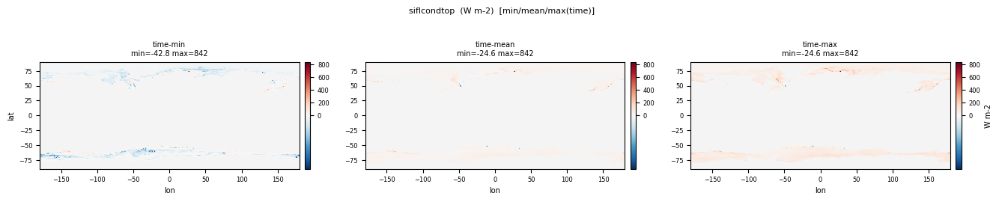
| Quantity | Expected | Observed |
|---|---|---|
| min | -100 | -229.0 |
| mean | ~-10 | 25.529 |
| max | 50 | 3414.9 |
Affected files (1)
- siflcondtop_tavg-u-hxy-si_mon_glb_gn_AWI-ESM-3_picontrol_r1i1p1f1_158701-158712.nc
Ice Sheet Surface Snow Melt
CF: surface_snow_melt_flux
Loss of snow mass resulting from surface melting. Computed as the surface melt water from snow on the ice sheet portion of the grid cell divided by the ice_sheet area in the grid cell; report as 0.0 for snow-free land_ice regions; report as missing where the land fraction is 0.

| Quantity | Expected | Observed |
|---|---|---|
| min | 0 | -2.955e-04 |
| mean | 1e-6 | -8.804e-06 |
| max | 1e-3 | -1.444e-31 |
Affected files (2)
- snm_tavg-u-hxy-lnd_day_glb_gn_AWI-ESM-3_picontrol_r1i1p1f1_15870101-15871231.nc
- snm_tavg-u-hxy-si_mon_glb_gn_AWI-ESM-3_picontrol_r1i1p1f1_158701-158712.nc
Compressive Sea Ice Strength
CF: compressive_strength_of_sea_ice
Computed strength of the ice pack, defined as the energy (J m-2) dissipated per unit area removed from the ice pack under compression, and assumed proportional to the change in potential energy caused by ridging. For Hibler-type models, this is P = P\* h exp(-C(1-A)) where P\* is compressive strength, h is ice thickness, A is compactness and C is strength reduction constant.
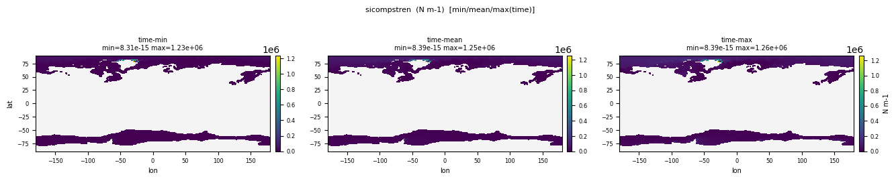
| Quantity | Expected | Observed |
|---|---|---|
| min | 0 | 8.315e-15 |
| mean | 5e3 | 28921.5 |
| max | 5e4 | 1.261e+06 |
Affected files (1)
- sicompstren_tavg-u-hxy-si_mon_glb_gn_AWI-ESM-3_picontrol_r1i1p1f1_158701-158712.nc
Water Flux into Sea Water Due to Sea Ice Thermodynamics
CF: water_flux_into_sea_water_due_to_sea_ice_thermodynamics
computed as the sea ice thermodynamic water flux into the ocean divided by the area of the ocean portion of the grid cell.
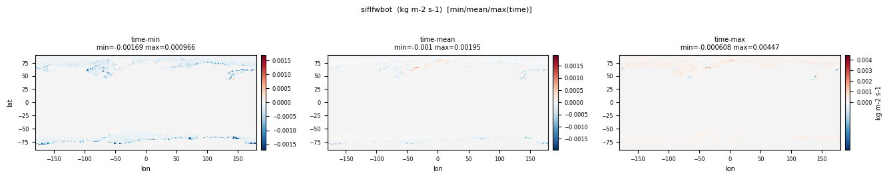
| Quantity | Expected | Observed |
|---|---|---|
| min | -1e-4 | -0.001687 |
| mean | ~0 | -1.539e-05 |
| max | 1e-4 | 0.004466 |
Affected files (2)
- siflfwbot_tavg-u-hxy-sea_mon_glb_gn_AWI-ESM-3_picontrol_r1i1p1f1_158701-158712.nc
- siflfwbot_tavg-u-hxy-si_mon_glb_gn_AWI-ESM-3_picontrol_r1i1p1f1_158701-158712.nc
Thickness of Refrozen Ice on Melt Pond
CF: thickness_of_ice_on_sea_ice_melt_pond
Volume of refrozen ice on melt ponds divided by melt pond covered area.
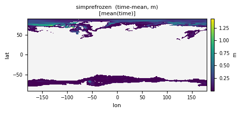
| Quantity | Expected | Observed |
|---|---|---|
| min | 0 | 3.906e-13 |
| mean | 0.02 | 0.1489 |
| max | 0.3 | 7.662 |
Affected files (1)
- simprefrozen_tavg-u-hxy-simp_mon_glb_gn_AWI-ESM-3_picontrol_r1i1p1f1_158701-158712.nc
Snow Heat Content
CF: thermal_energy_content_of_surface_snow
Heat content of all snow in grid cell divided by grid-cell area. This includes both the latent and sensible heat content contributions. Snow-water equivalent at 0 C is assumed to have a heat content of 0 J. Does not include the heat content of sea ice.
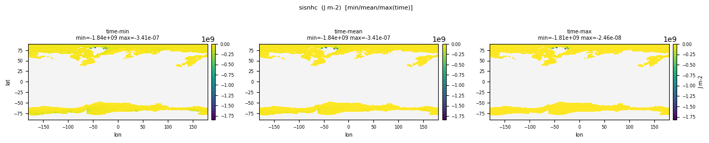
| Quantity | Expected | Observed |
|---|---|---|
| min | -5e7 | -1.842e+09 |
| mean | -2e6 | -1.664e+07 |
| max | 0 | -2.456e-08 |
Affected files (2)
- sisnhc_tavg-u-hxy-si_day_glb_gn_AWI-ESM-3_picontrol_r1i1p1f1_15870101-15871231.nc
- sisnhc_tavg-u-hxy-si_mon_glb_gn_AWI-ESM-3_picontrol_r1i1p1f1_158701-158712.nc
Sea-Ice Thickness
CF: sea_ice_thickness
Actual (floe) thickness of sea ice averaged over the ice-covered part of a given grid cell, NOT volume divided by grid area.
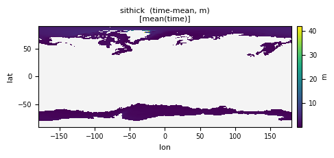
| Quantity | Expected | Observed |
|---|---|---|
| min | 0 | 4.167e-06 |
| mean | 0.3 (ice zone 1-3) | 1.736 |
| max | 12 | 270.1 |
Affected files (2)
- sithick_tavg-u-hxy-si_day_glb_gn_AWI-ESM-3_picontrol_r1i1p1f1_15870101-15871231.nc
- sithick_tavg-u-hxy-si_mon_glb_gn_AWI-ESM-3_picontrol_r1i1p1f1_158701-158712.nc
Sea-Ice Freeboard
CF: sea_ice_freeboard
Mean height of sea-ice surface (i.e. snow-ice interface when snow covered) above sea level. This follows the classical definition of freeboard for in situ observations. In the satellite community, sometimes the total height of sea ice and snow above sea level is referred to as freeboard. This can easily be calculated by adding sisnthick to sifb.
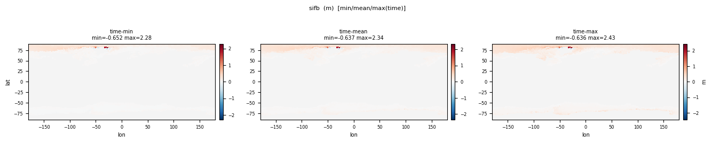
| Quantity | Expected | Observed |
|---|---|---|
| min | 0 | -0.6519 |
| mean | 0.2 | 0.1288 |
| max | 1.5 | 2.430 |
Affected files (1)
- sifb_tavg-u-hxy-si_mon_glb_gn_AWI-ESM-3_picontrol_r1i1p1f1_158701-158712.nc
Rainfall Flux
CF: rainfall_flux
Precipitation rate at surface: Includes precipitation of all forms of water in the liquid phase
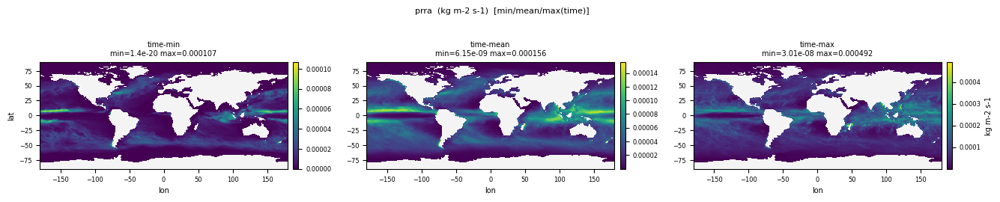
| Quantity | Expected | Observed |
|---|---|---|
| min | 0 | 4.579e-24 |
| mean | ~1e-6 | 2.527e-05 |
| max | ~1e-4 | 6.534e-04 |
Affected files (1)
- prra_tavg-u-hxy-si_mon_glb_gn_AWI-ESM-3_picontrol_r1i1p1f1_158701-158712.nc
X-Component of Sea-Ice Mass Transport
CF: sea_ice_x_transport
X-component of the sea-ice drift-induced transport of snow and sea ice mass.
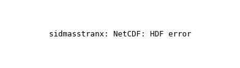
| Quantity | Expected | Observed |
|---|---|---|
| min | -1e8 | -1.796 |
| mean | ~0 | -0.02911 |
| max | 1e8 | 1.769 |
Affected files (1)
- sidmasstranx_tavg-u-hxy-u_mon_glb_gn_AWI-ESM-3_picontrol_r1i1p1f1_158701-158712.nc
Y-Component of Sea-Ice Mass Transport
CF: sea_ice_y_transport
Y-component of the sea-ice drift-induced transport of snow and sea ice mass.
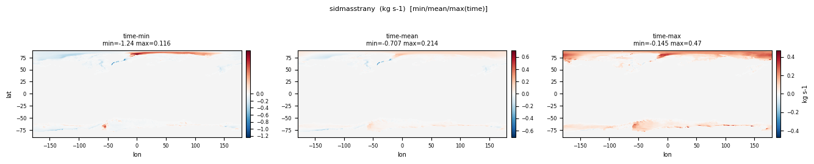
| Quantity | Expected | Observed |
|---|---|---|
| min | -1e8 | -2.573 |
| mean | ~0 | 0.01392 |
| max | 1e8 | 0.8972 |
Affected files (1)
- sidmasstrany_tavg-u-hxy-u_mon_glb_gn_AWI-ESM-3_picontrol_r1i1p1f1_158701-158712.nc
Sea-Ice Heat Content
CF: sea_ice_enthalpy_content
Heat content of all ice in grid cell divided by grid-cell area. This includes both the latent and sensible heat content contributions. Water at 0C is assumed to have a heat content of 0 J. This variable does not include heat content of snow, but does include heat content of brine in the sea ice. Heat content is always negative since both the sensible and the latent heat content of ice are less than that of water.
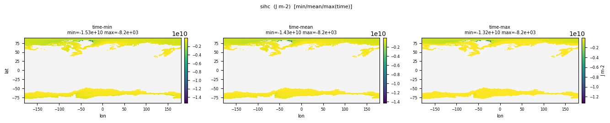
| Quantity | Expected | Observed |
|---|---|---|
| min | -1e9 | -1.533e+10 |
| mean | -1e8 | -5.085e+08 |
| max | 0 | -1280.4 |
Affected files (1)
- sihc_tavg-u-hxy-sea_mon_glb_gn_AWI-ESM-3_picontrol_r1i1p1f1_158701-158712.nc
Snow Mass on Sea Ice North
CF: surface_snow_mass
Total integrated mass of snow on sea ice in the Northern Hemisphere.
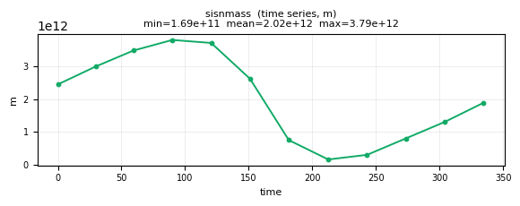
| Quantity | Expected | Observed |
|---|---|---|
| min | 0 | 1.632e+11 |
| mean | 2e15 | 2.014e+12 |
| max | 1e16 | 3.923e+12 |
Affected files (4)
- sisnmass_tavg-u-hm-u_day_nh_gn_AWI-ESM-3_picontrol_r1i1p1f1_15870101-15871231.nc
- sisnmass_tavg-u-hm-u_day_sh_gn_AWI-ESM-3_picontrol_r1i1p1f1_15870101-15871231.nc
- sisnmass_tavg-u-hm-u_mon_nh_gn_AWI-ESM-3_picontrol_r1i1p1f1_158701-158712.nc
- sisnmass_tavg-u-hm-u_mon_sh_gn_AWI-ESM-3_picontrol_r1i1p1f1_158701-158712.nc
Average Normal Stress in Sea Ice
CF: sea_ice_average_normal_horizontal_stress
Average normal stress in sea ice (first stress invariant). Requested as instantaneous value at the center of the month (i.e., first timestep of the 15th day of the month).
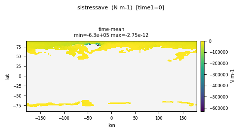
| Quantity | Expected | Observed |
|---|---|---|
| min | -5e4 | -6.298e+05 |
| mean | 0 | -10764.6 |
| max | 5e4 | -2.749e-12 |
Affected files (1)
- sistressave_tpt-u-hxy-si_mon_glb_gn_AWI-ESM-3_picontrol_r1i1p1f1_158701-158712.nc
X-Component of Ocean Stress on Sea Ice
CF: upward_x_stress_at_sea_ice_base
X-component of the ocean stress on the sea ice bottom divided by grid-cell area.
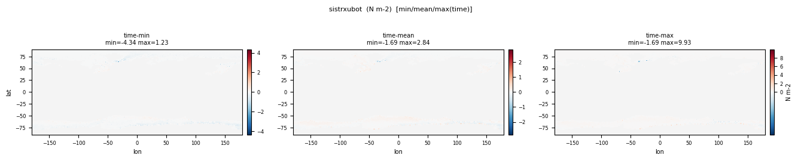
| Quantity | Expected | Observed |
|---|---|---|
| min | -1 | -4.340 |
| mean | 0 | -0.01145 |
| max | 1 | 9.932 |
Affected files (1)
- sistrxubot_tavg-u-hxy-si_mon_glb_gn_AWI-ESM-3_picontrol_r1i1p1f1_158701-158712.nc
Snow Depth
CF: surface_snow_thickness
where land over land, this is computed as the mean thickness of snow in the land portion of the grid cell (averaging over the entire land portion, including the snow-free fraction). Reported as 0.0 where the land fraction is 0.

| Quantity | Expected | Observed |
|---|---|---|
| min | 0 | 9.317e-20 |
| mean | 0.05 | 0.1727 |
| max | 10 | 97.011 |
Affected files (5)
- snd_tavg-u-hxy-lnd_day_glb_gn_AWI-ESM-3_picontrol_r1i1p1f1_15870101-15871231.nc
- snd_tavg-u-hxy-lnd_mon_glb_gn_AWI-ESM-3_picontrol_r1i1p1f1_158601-158612.nc
- snd_tavg-u-hxy-lnd_mon_glb_gn_AWI-ESM-3_picontrol_r1i1p1f1_158701-158712.nc
- snd_tavg-u-hxy-sn_day_glb_gn_AWI-ESM-3_picontrol_r1i1p1f1_15870101-15871231.nc
- snd_tavg-u-hxy-sn_mon_glb_gn_AWI-ESM-3_picontrol_r1i1p1f1_158701-158712.nc
Sea-Ice Mass Change from Dynamics
CF: tendency_of_sea_ice_amount_due_to_sea_ice_dynamics
Total rate of change in sea-ice mass through dynamics-related processes (advection, divergence, etc.) divided by grid-cell area.
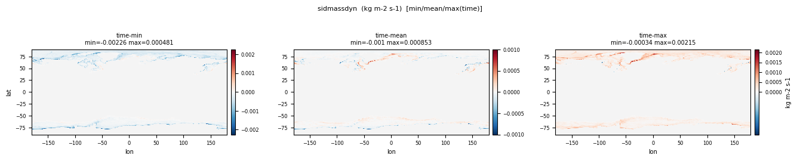
| Quantity | Expected | Observed |
|---|---|---|
| min | -1e-3 | -0.003468 |
| mean | ~0 | -5.540e-06 |
| max | 1e-3 | 0.005426 |
Affected files (1)
- sidmassdyn_tavg-u-hxy-si_mon_glb_gn_AWI-ESM-3_picontrol_r1i1p1f1_158701-158712.nc
Sea-Ice Mass Change from Thermodynamics
CF: tendency_of_sea_ice_amount_due_to_sea_ice_thermodynamics
Total rate of change in sea-ice mass from thermodynamic processes divided by grid-cell area.
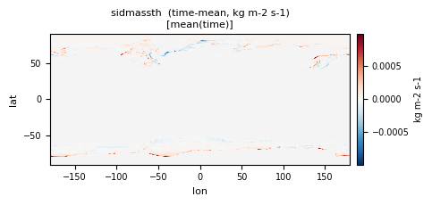
| Quantity | Expected | Observed |
|---|---|---|
| min | -1e-3 | -0.005181 |
| mean | ~0 | 1.783e-05 |
| max | 1e-3 | 0.001956 |
Affected files (1)
- sidmassth_tavg-u-hxy-si_mon_glb_gn_AWI-ESM-3_picontrol_r1i1p1f1_158701-158712.nc
Y-Component of Ocean Stress on Sea Ice
CF: upward_y_stress_at_sea_ice_base
Y-component of the ocean stress on the sea ice bottom divided by grid-cell area.
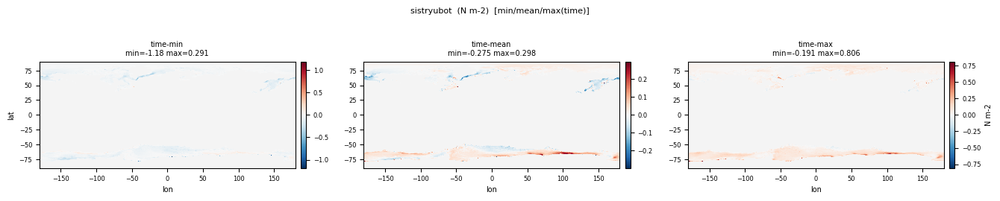
| Quantity | Expected | Observed |
|---|---|---|
| min | -1 | -7.989 |
| mean | 0 | 0.007383 |
| max | 1 | 4.000 |
Affected files (1)
- sistryubot_tavg-u-hxy-si_mon_glb_gn_AWI-ESM-3_picontrol_r1i1p1f1_158701-158712.nc
WARN
Sea-Ice Area Percentage (Ocean Grid)
CF: sea_ice_area_fraction
Percentage of a given grid cell that is covered by sea ice on the ocean grid, independent of the thickness of that ice.
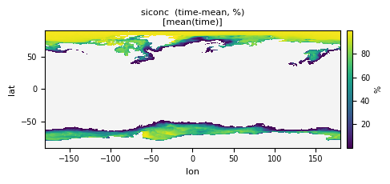
| Quantity | Expected | Observed |
|---|---|---|
| min | 0 | 4.173e-07 |
| mean | ~5 global / ~60 in ice zone | 79.846 |
| max | 100 | 100.0 |
Affected files (2)
- siconc_tavg-u-hxy-u_day_glb_gn_AWI-ESM-3_picontrol_r1i1p1f1_15870101-15871231.nc
- siconc_tavg-u-hxy-u_mon_glb_gn_AWI-ESM-3_picontrol_r1i1p1f1_158701-158712.nc
Sea-Ice Volume per Area
CF: sea_ice_thickness
Total volume of sea ice divided by grid-cell area, also known as the equivalent thickness of sea ice.
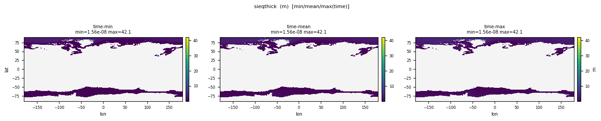
| Quantity | Expected | Observed |
|---|---|---|
| min | 0 | 1.348e-10 |
| mean | 0.3 (ice zone ~1.5) | 1.566 |
| max | 8 | 42.125 |
Affected files (1)
- sieqthick_tavg-u-hxy-si_mon_glb_gn_AWI-ESM-3_picontrol_r1i1p1f1_158701-158712.nc
Net Conductive Heat Flux in Sea Ice at the Base
CF: basal_downward_heat_flux_in_sea_ice
Net heat conduction flux at the ice base, i.e. the conductive heat flux from the centre of the lowermost vertical sea-ice grid box to the base of the sea ice (energy flow per sea ice area). Positive for a downward heat flux.
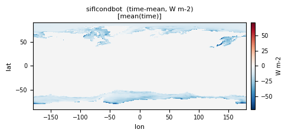
| Quantity | Expected | Observed |
|---|---|---|
| min | -100 | -155.2 |
| mean | ~-10 | -14.849 |
| max | 50 | 20.820 |
Affected files (1)
- siflcondbot_tavg-u-hxy-si_mon_glb_gn_AWI-ESM-3_picontrol_r1i1p1f1_158701-158712.nc
Freshwater Flux from Sea-Ice Surface
CF: water_flux_into_sea_water_due_to_surface_drainage
Total flux of fresh water from sea-ice surface into underlying ocean. This combines both surface meltwater that drains directly into the ocean and the drainage of surface melt ponds. By definition, this flux is always positive.
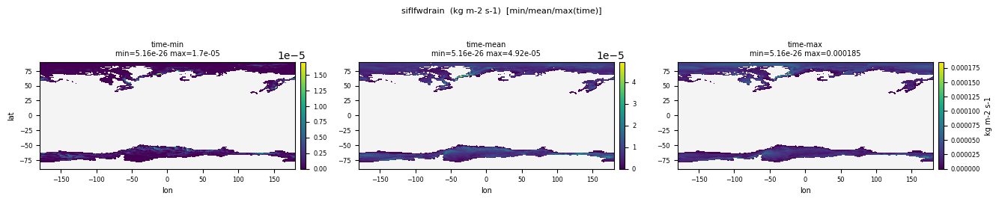
| Quantity | Expected | Observed |
|---|---|---|
| min | 0 | 1.828e-31 |
| mean | ~1e-6 | 7.548e-06 |
| max | 1e-4 | 2.534e-04 |
Affected files (1)
- siflfwdrain_tavg-u-hxy-si_mon_glb_gn_AWI-ESM-3_picontrol_r1i1p1f1_158701-158712.nc
Sea-Ice Mass
CF: sea_ice_amount
Total mass of sea ice divided by grid-cell area.
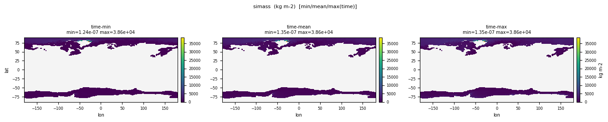
| Quantity | Expected | Observed |
|---|---|---|
| min | 0 | 1.236e-07 |
| mean | 30 | 1436.4 |
| max | 8000 | 38628.5 |
Affected files (1)
- simass_tavg-u-hxy-si_mon_glb_gn_AWI-ESM-3_picontrol_r1i1p1f1_158701-158712.nc
Fraction of Sea Ice Covered by Melt Pond
CF: area_fraction
Area fraction of sea-ice surface that is covered by melt ponds.
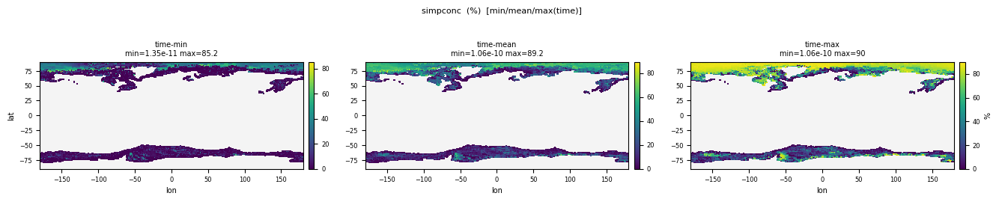
| Quantity | Expected | Observed |
|---|---|---|
| min | 0 | 1.345e-11 |
| mean | 5 | 24.821 |
| max | 50 | 89.994 |
Affected files (1)
- simpconc_tavg-u-hxy-si_mon_glb_gn_AWI-ESM-3_picontrol_r1i1p1f1_158701-158712.nc
Fraction of Sea Ice Covered by Effective Melt Pond
CF: area_fraction
Area fraction of sea-ice surface that is covered by open melt ponds, that is melt ponds that are not covered by snow or ice lids. This represents the effective (i.e. radiatively-active) melt pond area fraction.
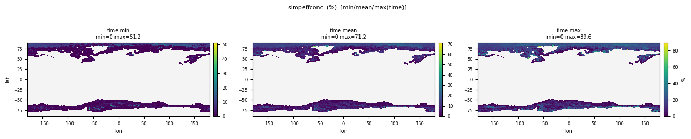
| Quantity | Expected | Observed |
|---|---|---|
| min | 0 | 0 |
| mean | 3 | 7.635 |
| max | 40 | 89.554 |
Affected files (1)
- simpeffconc_tavg-u-hxy-si_mon_glb_gn_AWI-ESM-3_picontrol_r1i1p1f1_158701-158712.nc
Melt Pond Depth
CF: sea_ice_melt_pond_thickness
Average depth of melt ponds on sea ice, that is melt pond volume divided by melt pond area.
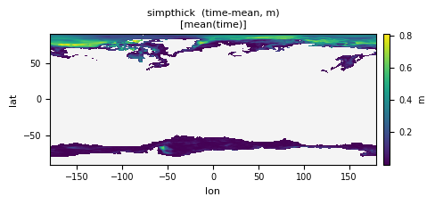
| Quantity | Expected | Observed |
|---|---|---|
| min | 0 | 1.344e-06 |
| mean | 0.05 | 0.1545 |
| max | 0.5 | 0.9999 |
Affected files (1)
- simpthick_tavg-u-hxy-simp_mon_glb_gn_AWI-ESM-3_picontrol_r1i1p1f1_158701-158712.nc
Mass of Salt in Sea Ice
CF: sea_ice_mass_content_of_salt
Total mass of all salt in sea ice divided by grid-cell area. Sometimes, models implicitly or explicitly assume a different salinity of the ice for thermodynamic considerations than they do for closing the salt budget with the ocean. In these cases, the total mass of all salt in sea ice should be calculated from the salinity value used in the calculation of the salt budget.
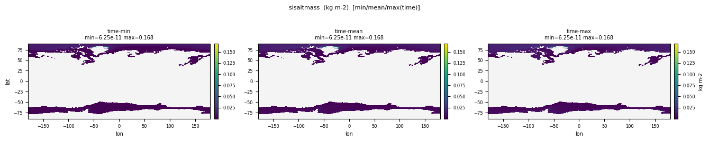
| Quantity | Expected | Observed |
|---|---|---|
| min | 0 | 5.392e-13 |
| mean | 0.15 | 0.006266 |
| max | 25 | 0.1685 |
Affected files (1)
- sisaltmass_tavg-u-hxy-si_mon_glb_gn_AWI-ESM-3_picontrol_r1i1p1f1_158701-158712.nc
Sea-Ice Speed
CF: sea_ice_speed
Speed of ice (i.e. mean absolute velocity) to account for back-and-forth movement of the ice.
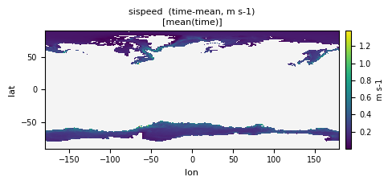
| Quantity | Expected | Observed |
|---|---|---|
| min | 0 | 1.014e-09 |
| mean | 0.05 | 0.1572 |
| max | 1.0 | 2.808 |
Affected files (2)
- sispeed_tavg-u-hxy-si_day_glb_gn_AWI-ESM-3_picontrol_r1i1p1f1_15870101-15871231.nc
- sispeed_tavg-u-hxy-si_mon_glb_gn_AWI-ESM-3_picontrol_r1i1p1f1_158701-158712.nc
Maximum Shear Stress in Sea Ice
CF: maximum_over_coordinate_rotation_of_sea_ice_horizontal_shear_stress
Maximum shear stress in sea ice (second stress invariant). Requested as instantaneous value at the center of the month (i.e., first timestep of the 15th day of the month).
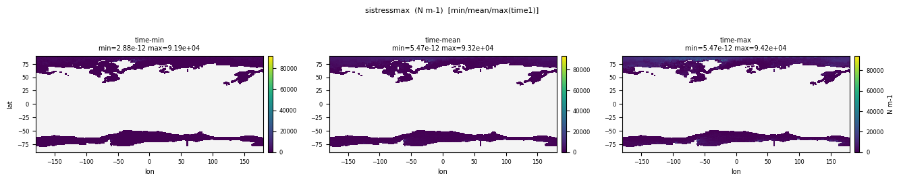
| Quantity | Expected | Observed |
|---|---|---|
| min | 0 | 2.877e-12 |
| mean | 1e3 | 1783.7 |
| max | 5e4 | 94150.5 |
Affected files (1)
- sistressmax_tpt-u-hxy-si_mon_glb_gn_AWI-ESM-3_picontrol_r1i1p1f1_158701-158712.nc
Fraction of Time Steps with Sea Ice
CF: fraction_of_time_with_sea_ice_area_fraction_above_threshold
Fraction of time steps of the averaging period during which sea ice is present (siconc > 0) in a grid cell.
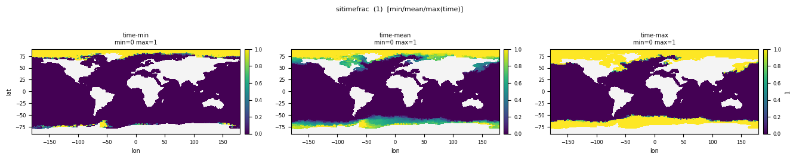
| Quantity | Expected | Observed |
|---|---|---|
| min | 0 | 4.173e-09 |
| mean | 0.1 | 0.7985 |
| max | 1 | 1.000 |
Affected files (2)
- sitimefrac_tavg-u-hxy-sea_day_glb_gn_AWI-ESM-3_picontrol_r1i1p1f1_15870101-15871231.nc
- sitimefrac_tavg-u-hxy-sea_mon_glb_gn_AWI-ESM-3_picontrol_r1i1p1f1_158701-158712.nc
X-Component of Sea-Ice Velocity
CF: sea_ice_x_velocity
X-component of sea-ice velocity on native model grid.
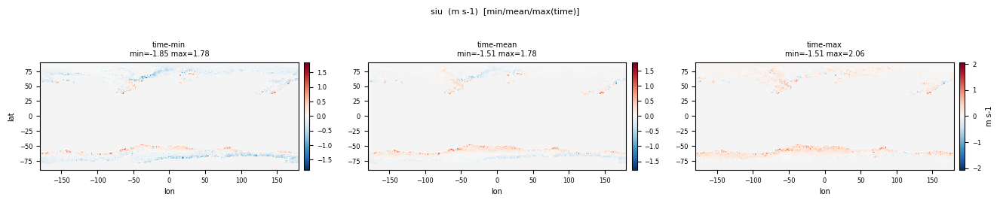
| Quantity | Expected | Observed |
|---|---|---|
| min | -1 | -2.725 |
| mean | 0 | -0.02509 |
| max | 1 | 2.126 |
Affected files (2)
- siu_tavg-u-hxy-si_day_glb_gn_AWI-ESM-3_picontrol_r1i1p1f1_15870101-15871231.nc
- siu_tavg-u-hxy-si_mon_glb_gn_AWI-ESM-3_picontrol_r1i1p1f1_158701-158712.nc
Y-Component of Sea-Ice Velocity
CF: sea_ice_y_velocity
Y-component of sea-ice velocity on native model grid.
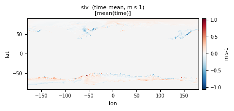
| Quantity | Expected | Observed |
|---|---|---|
| min | -1 | -2.752 |
| mean | 0 | 0.009197 |
| max | 1 | 2.221 |
Affected files (2)
- siv_tavg-u-hxy-si_day_glb_gn_AWI-ESM-3_picontrol_r1i1p1f1_15870101-15871231.nc
- siv_tavg-u-hxy-si_mon_glb_gn_AWI-ESM-3_picontrol_r1i1p1f1_158701-158712.nc
Sea-Ice Volume North
CF: sea_ice_volume
Total integrated volume of sea ice in the Northern Hemisphere.
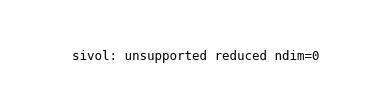
| Quantity | Expected | Observed |
|---|---|---|
| min | 10 (Sep) | 0.7389 |
| mean | 20 | 6.289 |
| max | 30 (Apr) | 12.277 |
Affected files (4)
- sivol_tavg-u-hm-u_day_nh_gn_AWI-ESM-3_picontrol_r1i1p1f1_15870116-15871216.nc
- sivol_tavg-u-hm-u_day_sh_gn_AWI-ESM-3_picontrol_r1i1p1f1_15870116-15871216.nc
- sivol_tavg-u-hm-u_mon_nh_gn_AWI-ESM-3_picontrol_r1i1p1f1_158701-158712.nc
- sivol_tavg-u-hm-u_mon_sh_gn_AWI-ESM-3_picontrol_r1i1p1f1_158701-158712.nc
Surface Snow Amount
CF: surface_snow_amount
the mass of surface snow on the land portion of the grid cell divided by the land area in the grid cell; reported as missing where the land fraction is 0; excludes snow on vegetation canopy or on sea ice.

| Quantity | Expected | Observed |
|---|---|---|
| min | 0 | 0 |
| mean | 20 | 278.4 |
| max | 3000 | 10000.0 |
Affected files (4)
- snw_tavg-u-hxy-lnd_day_glb_gn_AWI-ESM-3_picontrol_r1i1p1f1_15870101-15871231.nc
- snw_tavg-u-hxy-lnd_mon_glb_gn_AWI-ESM-3_picontrol_r1i1p1f1_158601-158612.nc
- snw_tavg-u-hxy-lnd_mon_glb_gn_AWI-ESM-3_picontrol_r1i1p1f1_158701-158712.nc
- snw_tavg-u-hxy-si_mon_glb_gn_AWI-ESM-3_picontrol_r1i1p1f1_158701-158712.nc
PASS
Soil Frozen Water Content
CF: soil_frozen_water_content
the mass (summed over all all layers) of frozen water.

| Quantity | Expected | Observed |
|---|---|---|
| min | 0 | 0 |
| mean | ~200 | 52.206 |
| max | ~5000 | 908.1 |
Affected files (2)
- mrfso_tavg-u-hxy-lnd_mon_glb_gn_AWI-ESM-3_picontrol_r1i1p1f1_158601-158612.nc
- mrfso_tavg-u-hxy-lnd_mon_glb_gn_AWI-ESM-3_picontrol_r1i1p1f1_158701-158712.nc
Surface Snow and Ice Sublimation Flux
CF: tendency_of_atmosphere_mass_content_of_water_vapor_due_to_sublimation_of_surface_snow_and_ice
surface upward flux of water vapor due to sublimation of surface snow and ice

| Quantity | Expected | Observed |
|---|---|---|
| min | -1e-4 | -1.025e-05 |
| mean | ~1e-7 | 1.024e-07 |
| max | 1e-4 | 1.529e-05 |
Affected files (3)
- sbl_tavg-u-hxy-lnd_mon_glb_gn_AWI-ESM-3_picontrol_r1i1p1f1_158701-158712.nc
- sbl_tavg-u-hxy-u_day_glb_gn_AWI-ESM-3_picontrol_r1i1p1f1_15870101-15871231.nc
- sbl_tavg-u-hxy-u_mon_glb_gn_AWI-ESM-3_picontrol_r1i1p1f1_158701-158712.nc
Sea-Ice Area Percentage (Atmospheric Grid)
CF: sea_ice_area_fraction
Percentage of a given grid cell that is covered by sea ice on the atmosphere grid, independent of the thickness of that ice.
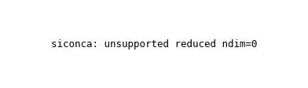
| Quantity | Expected | Observed |
|---|---|---|
| min | 0 | 0 |
| mean | ~5 global / ~60 ice zone | 3.422 |
| max | 100 | 100.0 |
Affected files (2)
- siconca_tavg-u-hxy-u_day_glb_gn_AWI-ESM-3_picontrol_r1i1p1f1_15870101-15871231.nc
- siconca_tavg-u-hxy-u_mon_glb_gn_AWI-ESM-3_picontrol_r1i1p1f1_158701-158712.nc
Sea-Ice Area Fraction Tendency Due to Dynamics
CF: tendency_of_sea_ice_area_fraction_due_to_dynamics
Total rate of change in sea-ice area fraction through dynamics-related processes (advection, divergence, etc.).
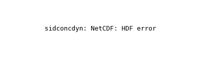
| Quantity | Expected | Observed |
|---|---|---|
| min | -1e-5 | -4.267e-06 |
| mean | ~0 | -2.769e-08 |
| max | 1e-5 | 4.156e-06 |
Affected files (1)
- sidconcdyn_tavg-u-hxy-sea_mon_glb_gn_AWI-ESM-3_picontrol_r1i1p1f1_158701-158712.nc
Sea-Ice Area Fraction Tendency Due to Thermodynamics
CF: tendency_of_sea_ice_area_fraction_due_to_thermodynamics
Total rate of change in sea-ice area fraction through thermodynamic processes.
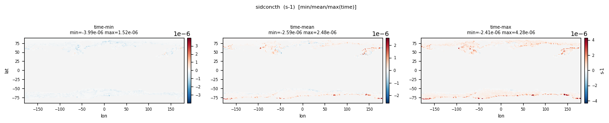
| Quantity | Expected | Observed |
|---|---|---|
| min | -1e-5 | -3.990e-06 |
| mean | ~0 | 4.062e-08 |
| max | 1e-5 | 4.275e-06 |
Affected files (1)
- sidconcth_tavg-u-hxy-sea_mon_glb_gn_AWI-ESM-3_picontrol_r1i1p1f1_158701-158712.nc
Ocean Drag Coefficient
CF: sea_ice_basal_drag_coefficient_for_momentum_in_sea_water
Oceanic drag coefficient that is used to calculate the oceanic momentum drag on sea ice.
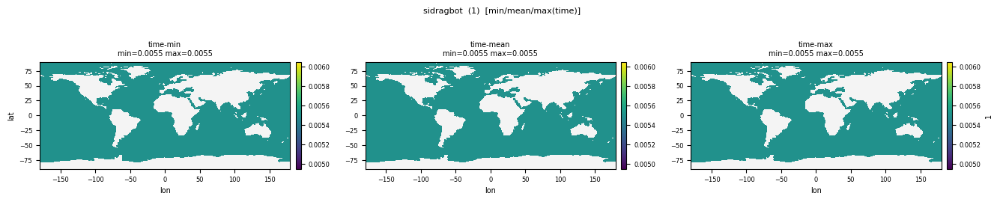
| Quantity | Expected | Observed |
|---|---|---|
| min | 1e-3 | 0.0055 |
| mean | 5e-3 | 0.0055 |
| max | 2e-2 | 0.0055 |
Affected files (1)
- sidragbot_tavg-u-hxy-si_mon_glb_gn_AWI-ESM-3_picontrol_r1i1p1f1_158701-158712.nc
Atmospheric Drag Coefficient
CF: surface_drag_coefficient_for_momentum_in_air
Atmospheric drag coefficient that is used to calculate the atmospheric momentum drag on sea ice.
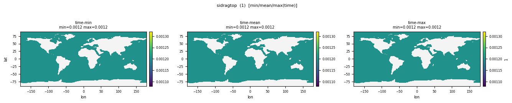
| Quantity | Expected | Observed |
|---|---|---|
| min | 1e-3 | 0.0012 |
| mean | 5e-3 | 0.0012 |
| max | 2e-2 | 0.0012 |
Affected files (1)
- sidragtop_tavg-u-hxy-si_mon_glb_gn_AWI-ESM-3_picontrol_r1i1p1f1_158701-158712.nc
X-Component of Atmospheric Stress on Sea Ice
CF: surface_downward_x_stress
X-component of the atmospheric stress on the surface of sea ice divided by grid-cell area.
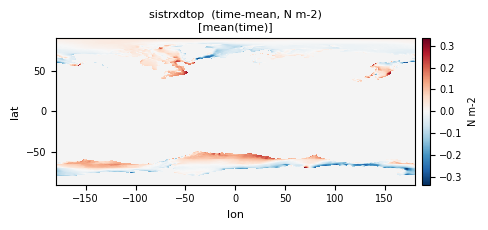
| Quantity | Expected | Observed |
|---|---|---|
| min | -1 | -0.8923 |
| mean | 0 | -0.009829 |
| max | 1 | 0.5968 |
Affected files (1)
- sistrxdtop_tavg-u-hxy-si_mon_glb_gn_AWI-ESM-3_picontrol_r1i1p1f1_158701-158712.nc
Y-Component of Atmospheric Stress on Sea Ice
CF: surface_downward_y_stress
Y-component of the atmospheric stress on the surface of sea ice divided by grid-cell area.
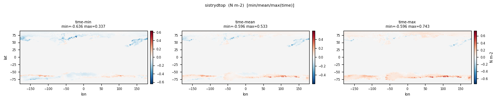
| Quantity | Expected | Observed |
|---|---|---|
| min | -1 | -0.6365 |
| mean | 0 | 0.007851 |
| max | 1 | 0.743 |
Affected files (1)
- sistrydtop_tavg-u-hxy-si_mon_glb_gn_AWI-ESM-3_picontrol_r1i1p1f1_158701-158712.nc
Temperature at Ice-Ocean Interface
CF: sea_ice_basal_temperature
Mean temperature at the base of the sea ice, NOT the temperature within lowermost sea-ice model layer.
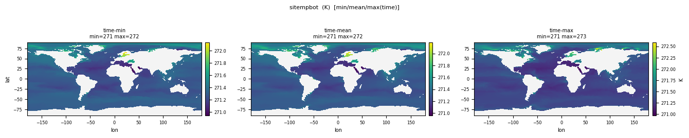
| Quantity | Expected | Observed |
|---|---|---|
| min | 271 | 270.9 |
| mean | 271.35 | 271.3 |
| max | 273.15 | 272.7 |
Affected files (1)
- sitempbot_tavg-u-hxy-si_mon_glb_gn_AWI-ESM-3_picontrol_r1i1p1f1_158701-158712.nc
Ice Sheet Snow Cover Percentage
CF: surface_snow_area_fraction
quantity averaged over ice_sheet (meaning grounded ice sheet and floating ice shelf) only, to avoid contamination from other surfaces (eg: permafrost)

| Quantity | Expected | Observed |
|---|---|---|
| min | 0 | 0 |
| mean | 15 | 7.095 |
| max | 100 | 100.0 |
Affected files (3)
- snc_tavg-u-hxy-lnd_day_glb_gn_AWI-ESM-3_picontrol_r1i1p1f1_15870101-15871231.nc
- snc_tavg-u-hxy-lnd_mon_glb_gn_AWI-ESM-3_picontrol_r1i1p1f1_158601-158612.nc
- snc_tavg-u-hxy-lnd_mon_glb_gn_AWI-ESM-3_picontrol_r1i1p1f1_158701-158712.nc
Ice Sheet Snow Internal Temperature
CF: temperature_in_surface_snow
quantity averaged over ice_sheet (meaning grounded ice sheet and floating ice shelf) only, to avoid contamination from other surfaces (eg: permafrost)

| Quantity | Expected | Observed |
|---|---|---|
| min | 220 | 185.5 |
| mean | 260 | 271.5 |
| max | 273.15 | 273.2 |
Affected files (1)
- tsn_tavg-u-hxy-lnd_day_glb_gn_AWI-ESM-3_picontrol_r1i1p1f1_15870101-15871231.nc